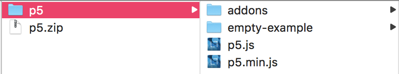
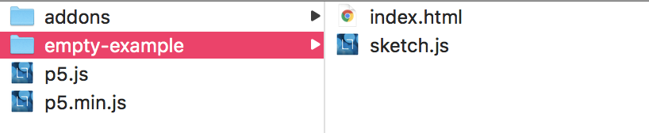
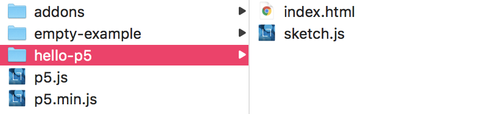

If you're new to the workflow of p5.js, a lot of the drawing fuctions should look familiar if you're coming from Processing or openFrameworks (e.g. rect() and ellipse()). What might not look so familiar is the workflow. This is just a quick guide to help get you familiar with what a p5 project looks like and how it might be structured.
In essence, p5 is a javascript library that lets you make a canvas on a web page and draw on it. p5 also has a lot of libraries which lets you access web apis, interact with the DOM on your webpage, and work with text inputs.
Fortunately, there's very little that we need to download or install to set p5 set up. All we need to do is go to p5js.org/download and click the link that says "Complete Library". This gives you a zip file which you can extract into a folder that looks like this:

The first folder has the optional addons for p5, the javascript files at the bottom have the core code for the p5 library, and the "empty example folder"

Inside that folder we'll find the two files that you'll usually be working with on smaller p5 projects; index.html and sketch.js.
But before we start working with these files, lets duplicate them and name the copy.
If you're working on a bigger, more professional project, you probably wouldn't use the method I'm prescribing now. In fact, you might not be using p5 at all. But since p5 uses the heuristic of a 'sketchbook,' we'll lean into that, and treat each project folder like a page in our own personal sketchbook.
To do so, lets duplicate the empty-example folder and rename it something appropriate to the project we're working on. Since we're familiarizing ourselves with p5, lets call it hello-p5.

Now lets open up the folder inside your text editor of choice. (If you don't have a favorite text editor, might I suggest Visual Studio Code?) Before we start in on the sketch.js file, lets look at whats going on inside the index.html file. It should look something like this.
<!DOCTYPE html>
<html>
<head>
<meta name="viewport" width=device-width, initial-scale=1.0, maximum-scale=1.0, user-scalable=0>
<style> body {padding: 0; margin: 0;} </style>
<script src="../p5.min.js"></script>
<script src="../addons/p5.dom.min.js"></script>
<script src="../addons/p5.sound.min.js"></script>
<script src="sketch.js"></script>
</head>
<body>
</body>
</html>
So you might have noticed that there isn't a lot going on here, at least not in the <body> of the page. Everything here is about tying the javascript files that we have together and running them using the <script> tag.
Now let's look at the sketch.js file.
function setup() {
// put setup code here
}
function draw() {
// put drawing code here
}
As the comments suggest, the setup() loop runs only once, and the draw() loop runs continuously. This is where we'll be adding code for many of the examples in this book.
Typically, the first thing you need to do in a p5 sketch is add a canvas to the page. We do this by calling the function createCanvas() and passing in the x and y dimensions of the canvas. So if we wanted to make a canvas that is 400 by 300 pixels, we'd write:
function setup()
{
createCanvas(400, 300);
}
Alternatively, if we wanted to make the canvas the size of the browser window, we can write:
function setup()
{
createCanvas(windowWidth, windowHeight);
}
If you need to brush up on the p5 API, there's a lot neat examples and refences on the p5 site.